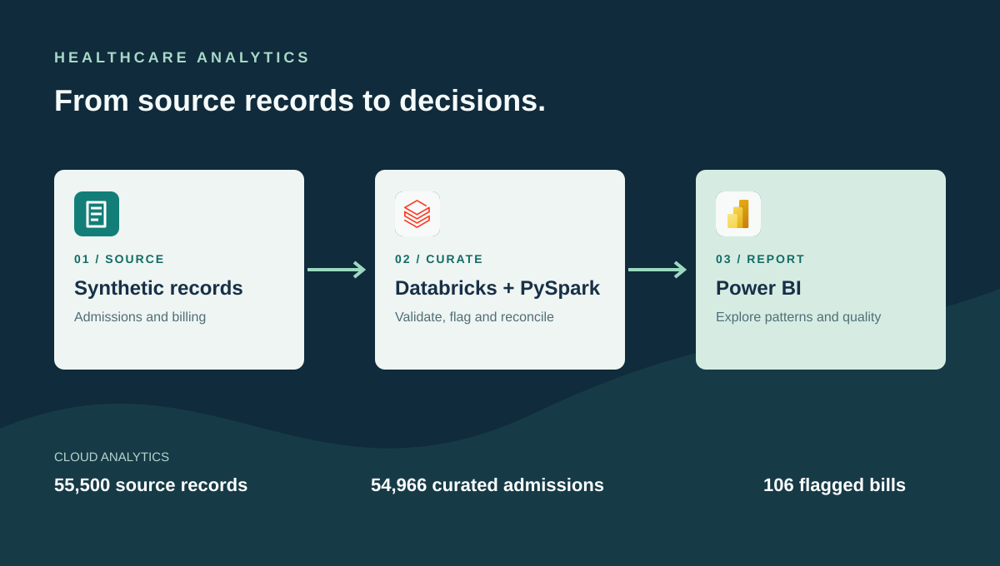
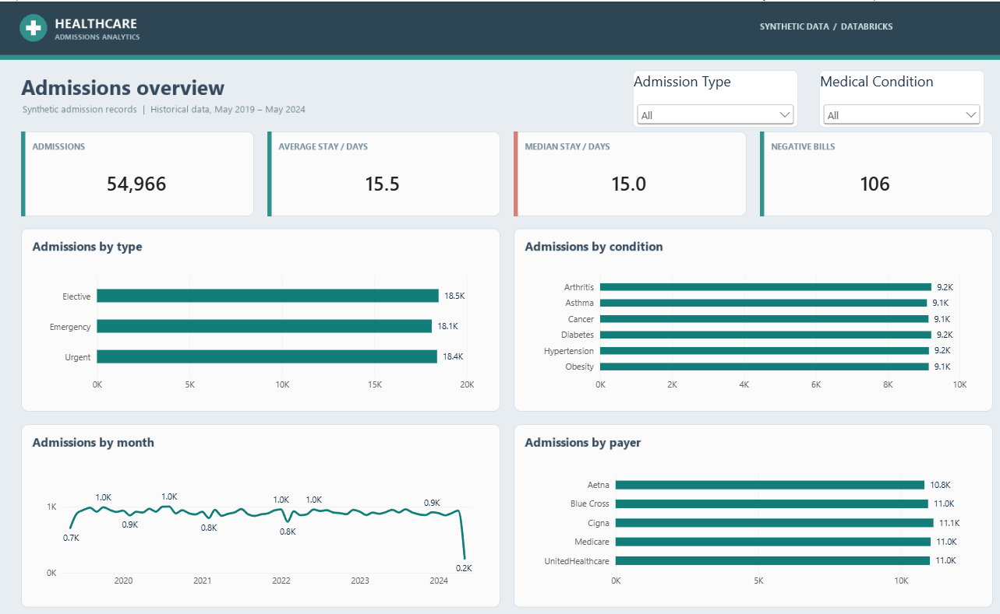
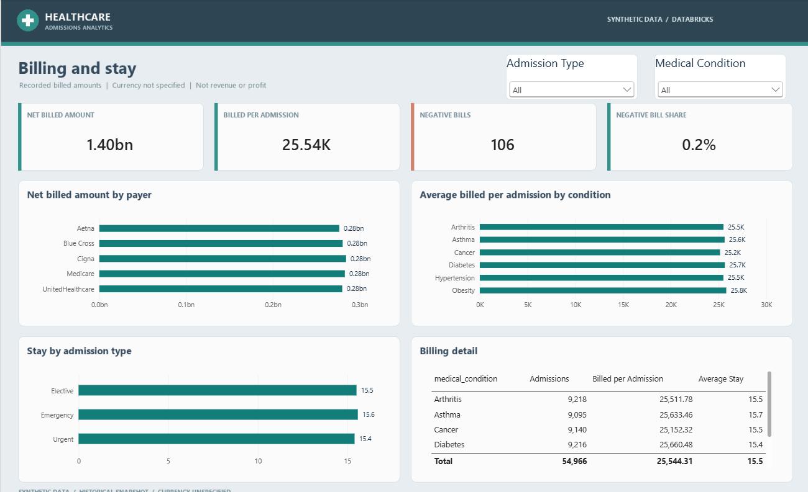
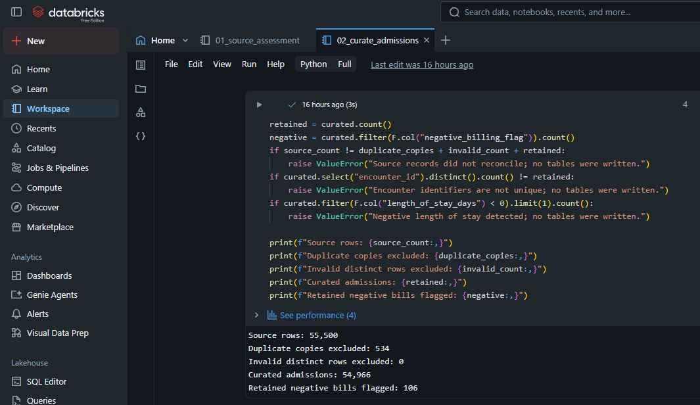

Admissions
Compare volume and elapsed stay across admission types and medical conditions.
CLOUD DATA ENGINEERING / BUSINESS INTELLIGENCE
Turning synthetic admission and billing records into reconciled data and useful Power BI reporting.
Databricks Free Edition / Synthetic historical dataReconciled Databricks tables · Power BI connection and refresh verified
FROM SOURCE TO REPORT
Databricks · PySpark · Delta · Power BITHE QUESTION
This project explores admission volume, length of stay, and billed amounts across recorded categories. It pairs a cloud-based PySpark workflow with a Power BI report, using synthetic data to demonstrate the process.
BUSINESS INTELLIGENCE
Compare volume and elapsed stay across admission types and medical conditions.
Explore recorded billed amounts and average amounts per admission across categories.
Review source reconciliation, excluded duplicate copies, and negative bills retained for follow-up.
The Power BI Desktop connection to the Databricks SQL warehouse was tested, and a refresh succeeded. The report is a local working report; it is not presented as a public interactive dashboard.
Download the interactive Power BI report (.pbix) · Opens in Power BI Desktop. Contains a fixed synthetic snapshot reconstructed from the local source; it is not connected to Databricks.


ENGINEERING
A synthetic CSV is uploaded to a Unity Catalog volume. A PySpark assessment checks schema and source quality; a separate notebook prepares a curated admission table and a full-snapshot quality summary in managed Delta tables. Power BI imports the tables through the Databricks connector.
Project documentation · Databricks workflow and validation
The report uses a denormalized admissions table and a separate quality summary. It is not presented as a connected star schema.
DATA QUALITY
Distinct rows that fail required-field or date rules are excluded; none failed those checks in this snapshot. Negative billing amounts are retained and flagged: 106 remain in the curated table. Treating identical source rows as duplicate copies is a project assumption, not proof of duplicate real-world encounters.
The notebook checks source reconciliation, distinct encounter identifiers, and nonnegative stay lengths before writing the curated tables. This screenshot shows the successful pre-write checks and counts for the synthetic snapshot.

SCOPE AND SOURCE
The dataset is entirely synthetic. It does not establish reliable patient identities, readmissions, patient churn, real clinical outcomes, or billing currency. Billed amounts are not collections, revenue, profit, or treatment costs. The source covers May 2019 through May 2024, including partial boundary months.
Source: Healthcare Dataset by prasad22 on Kaggle. Source files are not published with this case study. Illustrations are explanatory, and figures describe only the inspected snapshot.
CONTACT
I’m interested in opportunities across data engineering, cloud infrastructure, and analytics.